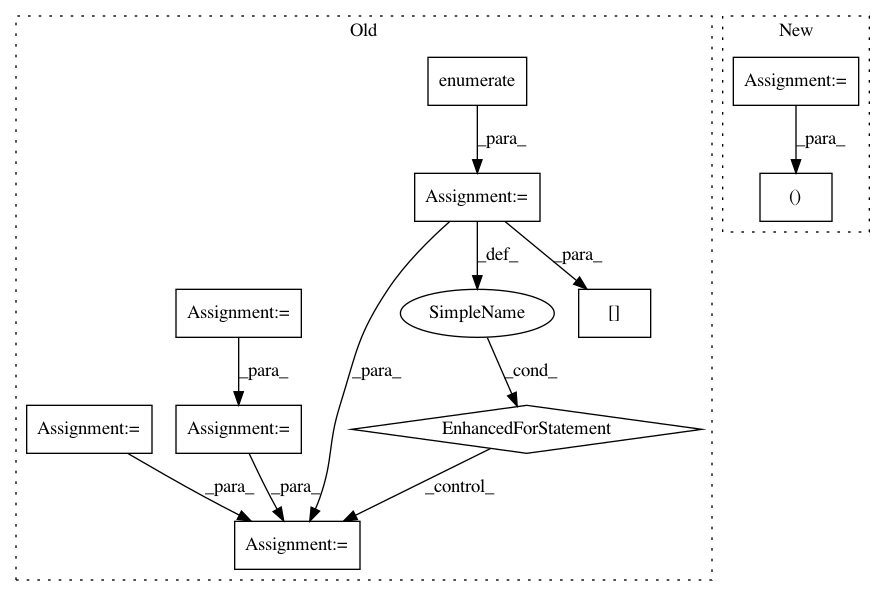

7b34113cc3b5529a127bd02667de9de0b5b75df9,models/networks_basic.py,PNet,forward,#PNet#Any#Any#Any#,40
Before Change
def forward(self, in0, in1, retPerLayer=False):
in0_sc = self.scaling_layer(in0)
in1_sc = self.scaling_layer(in1)
outs0 = self.net.forward(in0_sc)
outs1 = self.net.forward(in1_sc)
if(retPerLayer):
all_scores = []
for (kk,out0) in enumerate(outs0):
cur_score = (1.-util.cos_sim(outs0[kk],outs1[kk]))
if(kk==0):
val = 1.*cur_score
else:
val = val + cur_score
if(retPerLayer):
all_scores+=[cur_score]
if(retPerLayer):
return (val, all_scores)
else:
return val
After Change
assert(in0.size()[0]==1) // currently only supports batchSize 1
if(self.colorspace=="RGB"):
value = util.dssim(1.*util.tensor2im(in0.data), 1.*util.tensor2im(in1.data), range=255.).astype("float")
elif(self.colorspace=="Lab"):
value = util.dssim(util.tensor2np(util.tensor2tensorlab(in0.data,to_norm=False)),
util.tensor2np(util.tensor2tensorlab(in1.data,to_norm=False)), range=100.).astype("float")
ret_var = Variable( torch.Tensor((value,) ) )
if(self.use_gpu):
ret_var = ret_var.cuda()
return ret_var
In pattern: SUPERPATTERN
Frequency: 3
Non-data size: 10
Instances
Project Name: richzhang/PerceptualSimilarity
Commit Name: 7b34113cc3b5529a127bd02667de9de0b5b75df9
Time: 2019-07-26
Author: rich.zhang@eecs.berkeley.edu
File Name: models/networks_basic.py
Class Name: PNet
Method Name: forward
Project Name: analysiscenter/batchflow
Commit Name: 02098c5c44893ce455aefcfc452aa00bd655987b
Time: 2017-11-15
Author: rhudor@gmail.com
File Name: dataset/models/tf/unet.py
Class Name: UNet
Method Name: body
Project Name: scikit-learn-contrib/DESlib
Commit Name: f7a04171e58eb43dfe5b18d06c76481cdf1c5da9
Time: 2018-03-29
Author: rafaelmenelau@gmail.com
File Name: deslib/dcs/lca.py
Class Name: LCA
Method Name: estimate_competence